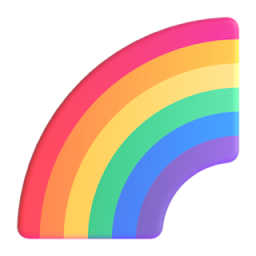

今天学什么
加载中…
演示

找出一样的
答对啦！

闯关成功！
练习册
点一本书，照着屏幕上的题在纸上做
练习册
1 / 1
家长端
每日安排
每周安排：周一 / 周三 识字阅读＋数学；周二 识字阅读＋拼音；周四 识字阅读＋英语；周五 识字阅读＋数学或拼音；周六 自由拓展（各科都排）；周日 休息复盘，只复习不排新课。拼音和英语错开，避免发音混淆。
修改"每日分钟数"后，从明天开始生效；点下方按钮可立即按新设置重排今天。
课程缓存（离线看过的课）
正在读取…
视频不占安装包：第一次看某集时从云端边看边存，之后这集就能离线看。占用超过 2 GB 会自动删掉最久没看的。
本地课件（完全离线用）
正在检查…
手机里已经存了全套视频时用这里：点一次按钮，选中存视频的那个文件夹（能看到 u01、u02 那一层，选它的上一层也行），之后完全断网也能看全部课程和练习册。没存视频就不用管，App 会自动用云端点播。
孩子界面
孩子还不识字，语音会念出「今天有几节课」「这一节是什么」，完成时给出鼓励。如果平板在公共场合，可以把语音关掉只留音效。
「闯关」是学完一节课后的 3 道小题，题目按这一节的内容自动出（拼音找一样的字母、识字听音选字、数学数一数、英语找大小写），每题都有语音和图卡。答错不打叉、不扣分，只是把错的那张变暗，让孩子再选一次；错两次会把正确答案点亮。做完了会记录答对几题，家长端「统计」里能看。
学习数据
建议每周导出一次备份。清理浏览器数据会丢失本机记录，导入备份即可恢复。
孩子不识字，怎么用？
孩子界面刻意做到「不用读字也能操作」：
- 一个巨大的绿色按钮「▶ 开始学习」——点它直接进入今天第一节，不需要选择、不需要读课程名。
- 每节课一张大卡片，上面是课程画面的缩略图、左侧一个大大的序号、一个单元图标（🗣 拼音 / 📖 识字 / 🔢 数学 / 🌍 英语）。孩子靠图和数字就能认出「这是第几节」。
- 家长可以在「课程」页点「看题目」，提前试玩这节课的 3 道小题（试玩不计入孩子的成绩）。
- 语音引导：打开应用会说「今天有 N 节课」，点进一节会说「这一节是拼音，第 1 集」，学完说「太棒了」。语音已内置在应用里（温柔女声、语速放慢），不需要平板装任何语音引擎，也不联网。
- 学完进入「闯关小游戏」：小熊带路走三级台阶，每节 3 道小题（按本节课内容出题：拼音找字母、识字听音选字、数学数一数、英语找大小写），全部有语音和插画，答错不打叉、不扣分，错两次会点亮正确答案。走完三级拿到奖杯才算学完，然后自动进入下一节。
- 首页有黄色「练习册」按钮：12 本春雨幼教练习册（拼音/识字/数学/英语，共 619 页）像书架一样摆着，点开一页一页翻，照着屏幕上的题在纸上做。每本记住看到第几页，不占用每天的学习时间。
- 播完自动进入下一节，不需要孩子自己找下一节在哪。
- 顶部一排小星星表示今天的进度，学完一节亮一颗，比「1/5」这种数字直观。
- 首次打开有小熊引导：一只手指着大按钮，只出现一次。
语音和音效可以在「设置 → 孩子界面」里分别关掉（闯关小游戏也可以单独关）。语音片段已离线打包进应用（约 9 MB，387 句），公共场合可只关语音留音效。
开始之前：课程是自动规划还是手动？
全自动，不用写课表，也不用编辑任何 JSON。你唯一要动手的是把原始课件按单元放进文件夹、用文件名前缀决定顺序（例如 01 a o e.mp4、02 拼音描红.pdf）。
courses.json 是跑脚本时自动生成的「有哪些课、按什么顺序」清单；而「今天学哪几节」是每天首次打开时按当前进度实时算出来的，包含昨日顺延、到期复习和新课，不会提前排好一整年的课表。所以落下一天，第二天自动顺延，不需要你重排。
想改顺序：改原始文件名前缀 → 重跑脚本 → 应用当天自动重排今天。家长端只能做微调（改每日分钟数、跳课、临时加一节、改今日顺序），不是规划课表。
快速上手六步
- 电脑装好 Python + FFmpeg（有 PDF 再
pip install pypdfium2） - 把课件按
01 拼音 / 02 识字 / …分单元放好，文件名加数字前缀 - 先跑
--dry-run看报告，再跑正式命令导入，自动生成courses.json - 把整个 StudyDaily 文件夹拷到平板根目录（
/内部存储/StudyDaily）——可选，不做也能用 - 安装
StudyDaily.apk，打开就能学（视频云端点播，无需权限） - 孩子每天点桌面「每日学习」图标即可，今天学什么由系统自动算好
一、电脑上做一次（不需要常开电脑）
把按单元分好文件夹的原始课件放到一个目录，例如 D:/幼小衔接课程，然后在本项目目录执行：
python tools/prepare_courses.py --src "D:/幼小衔接课程" --dry-run python tools/prepare_courses.py --src "D:/幼小衔接课程"
先看 --dry-run 的报告，确认分类和数量。正式跑会把 .ts / .mkv / H.265 统一转成 H.264 + AAC 的 MP4（720p），输出到 videos/u01/001.mp4 这样的纯英文路径，并生成 courses.json。原始文件请留着做备份。
需要先安装 FFmpeg 并加入 PATH。几百个视频一般要跑几十分钟到几小时，中途可以停，重跑会自动跳过已完成的文件。
视频格式 & PDF 课件
视频不是必须 720p。必须的是 H.264 视频 + AAC 音频 + MP4 容器（yuv420p、faststart），安卓 Chrome 才能稳定播放和拖动进度条；H.265 / 10bit / MKV / TS / DTS 音轨会黑屏或没声音。720p 只是"最高分辨率"的默认值，防止 4K 课件占满平板空间；原本 480p / 540p 的课件会原样保留，不会被放大。
python tools/prepare_courses.py --src "..." --scale 1080 # 允许到 1080p python tools/prepare_courses.py --src "..." --scale 0 # 完全保留原始分辨率
PDF 可以直接用。练习纸、讲义、字帖等 .pdf 会和视频按文件名自然排序混排，例如 01 a o e.mp4 → 02 拼音练习.pdf → 03 i u ü.mp4。转码时每页渲染成图片，孩子在应用里左右滑动翻页，看完最后一页点「学完了」；PDF 与视频一样参与每日排课和 1/3/7/15 天复习。
pip install pypdfium2 # 首次使用需要，用于 PDF 转图片 python tools/prepare_courses.py --src "..." --pdf-minutes 5
二、拷到平板
把整个 StudyDaily 文件夹（含 index.html、courses.json、videos/、posters/）拷到平板根目录，路径是 /内部存储/StudyDaily。
三、装 App（推荐）
1. 把 StudyDaily.apk 拷到平板并安装；系统提示「未知来源应用」时允许一次。
2. 首次打开点「去授权」，在系统设置里打开「访问所有文件」开关，返回后自动加载课程。
3. 之后孩子点桌面 每日学习 图标，直接全屏进入，不需要浏览器、也不需要额外的服务器 App。
进度保存在 App 内部 progress.json，清浏览器数据也不会丢；换平板时把整个 StudyDaily 文件夹拷过去就能接着学。
备选（不装 App）：装 Simple HTTP Server 之类，共享目录指向 StudyDaily 并开机自启，Chrome 打开 http://127.0.0.1:8080/ → 菜单「添加到主屏幕」。视频必须走 HTTP，直接双击 index.html（file://）会黑屏。
四、每天怎么用
孩子看到的只有"今天这几节课"，播完自动下一节，全部完成后界面锁住，看不到后面的课，也不会因为落下了就第二天加量。家长连点右上角 ⚙ 五次（或长按）输入 PIN（默认 1234）进入家长端，可以改每日时长、跳过某节、标记"没学会"、看热力图。
五、备份与常见问题
备份：家长端 → 设置 → 导出进度备份，会下载一个 JSON；换设备或清了浏览器数据后，用"导入备份"恢复。
黑屏 / 播不动：视频不是 H.264+AAC，重新跑一次转码脚本并加 --force。
没有语音：确认 voice/ 文件夹和 voice/index.json 已拷进平板（整个文件夹一起拷就不会缺）；声音开关在右上角，家长端设置里也能分别控制语音和音效。
课程没更新：确认 courses.json 已替换，刷新页面；还不行就清一下本应用的网站数据（先导出备份）。
家长验证
输入 4 位 PIN
🤔
这一节学完了吗？
点「学完啦」才会记下来
太棒了！
站起来动一动，看看窗外 👀